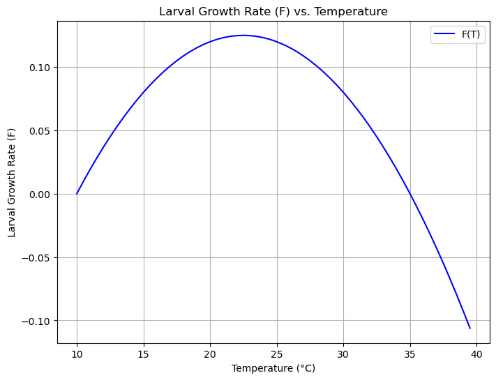

CDA9: Linear stability analysis (under construction)#
Larvae-Vector System: Stability Analysis and Temperature Dependence#
This notebook explores the stability of a linear ordinary differential equation (ODE) system modeling the dynamics of larvae and a disease vector population. We will analyze the system’s eigenvalues and then introduce temperature-dependent parameters to see how stability changes.
Part 1: General Analysis of the Linear System#
First, we’ll set up the symbolic representation of our ODE system and the corresponding matrix.
import numpy as np
import matplotlib.pyplot as plt
import sympy as sp
from scipy.linalg import eigvals
# Define the symbolic variables
L, V, t = sp.symbols('L V t')
G, Y, F, Z = sp.symbols('G Y F Z')
# State the system of ODEs
print("The system of linear ordinary differential equations is:")
print("dL/dt = G*V - Y*L - F*L")
print("dV/dt = F*L - Z*V")
print("\n")
The system of linear ordinary differential equations is:
dL/dt = G*V - Y*L - F*L
dV/dt = F*L - Z*V
The system can be written in the form \(dX/dt = AX\), where \(X = \begin{pmatrix} L \\ V \end{pmatrix}\) and \(A\) is the matrix of coefficients. The stability of the system’s equilibrium point (0,0) is determined by the eigenvalues of matrix \(A\).
# Create the matrix A
A = sp.Matrix([[-Y - F, G],
[F, -Z]])
print("The matrix A is:")
sp.pprint(A)
print("\n")
# Calculate the eigenvalues symbolically
tr_A = sp.trace(A)
det_A = sp.det(A)
print(f"The trace of A is: {tr_A}")
print(f"The determinant of A is: {det_A}")
print("\n")
print("The eigenvalues are found by solving the characteristic equation: \u03bb² - tr(A)\u03bb + det(A) = 0.")
print("The discriminant, \u0394 = tr(A)² - 4*det(A), determines the nature of the eigenvalues:")
print("- If \u0394 > 0, the eigenvalues are real and distinct.")
print("- If \u0394 < 0, the eigenvalues are a complex conjugate pair.")
print("- If \u0394 = 0, there is a single, repeated real eigenvalue.")
print("\n")
print("The stability of the system's equilibrium point is determined by the eigenvalues:")
print("- **Stable (Node or Spiral):** Both real parts of the eigenvalues are negative. All solutions converge to the equilibrium.")
print("- **Saddle Point (Unstable):** One real eigenvalue is positive and one is negative. Solutions move away from the equilibrium along one direction but toward it along another.")
print("- **Unstable (Node or Spiral):** Both real parts are positive. All solutions diverge from the equilibrium.")
print("- **Center (Neutrally Stable):** Eigenvalues are purely imaginary (real part is zero). Solutions form closed loops around the equilibrium.")
The matrix A is:
⎡-F - Y G ⎤
⎢ ⎥
⎣ F -Z⎦
The trace of A is: -F - Y - Z
The determinant of A is: -F*G + F*Z + Y*Z
The eigenvalues are found by solving the characteristic equation: λ² - tr(A)λ + det(A) = 0.
The discriminant, Δ = tr(A)² - 4*det(A), determines the nature of the eigenvalues:
- If Δ > 0, the eigenvalues are real and distinct.
- If Δ < 0, the eigenvalues are a complex conjugate pair.
- If Δ = 0, there is a single, repeated real eigenvalue.
The stability of the system's equilibrium point is determined by the eigenvalues:
- **Stable (Node or Spiral):** Both real parts of the eigenvalues are negative. All solutions converge to the equilibrium.
- **Saddle Point (Unstable):** One real eigenvalue is positive and one is negative. Solutions move away from the equilibrium along one direction but toward it along another.
- **Unstable (Node or Spiral):** Both real parts are positive. All solutions diverge from the equilibrium.
- **Center (Neutrally Stable):** Eigenvalues are purely imaginary (real part is zero). Solutions form closed loops around the equilibrium.
Part 2: Temperature Dependencies and Plotting#
Now, we’ll introduce some simplified, example functions for how the parameters depend on temperature. These functions are chosen to illustrate different behaviors but could be replaced with more realistic models.
# Define temperature-dependent parameters
def G_temp(T):
return 0.1 * np.exp(0.05 * T)
def Y_temp(T):
return 0.05 + 0.005 * T
def F_temp(T):
# This is a parabolic function, modeling an optimal temperature for growth
return 0.08 * (T - 10) * (35 - T) / 100
def Z_temp(T):
return 0.1 + 0.002 * T**2
We can plot one of these functions to visualize its behavior across a range of temperatures. Here’s a plot of the larval growth rate, \(F\).
# Create a range of temperatures
temps = np.arange(10, 40, 0.5)
# Calculate the values of F over the temperature range
F_values = [F_temp(T) for T in temps]
# Plot the growth rate (F) vs. temperature
plt.figure(figsize=(8, 6))
plt.plot(temps, F_values, label='F(T)', color='blue')
plt.title('Larval Growth Rate (F) vs. Temperature')
plt.xlabel('Temperature (°C)')
plt.ylabel('Larval Growth Rate (F)')
plt.grid(True)
plt.legend()
plt.show()

Part 3: Analyzing Stability at a Specific Temperature#
Finally, we’ll pick a specific temperature, calculate the numerical values of our parameters, construct the matrix \(A\), and find its eigenvalues to determine the system’s stability at that temperature.
# Choose an example temperature
T_example = 25
# Calculate parameter values at the chosen temperature
G_val = G_temp(T_example)
Y_val = Y_temp(T_example)
F_val = F_temp(T_example)
Z_val = Z_temp(T_example)
# Create the numerical matrix A
A_numerical = np.array([[-Y_val - F_val, G_val],
[F_val, -Z_val]])
# Find the eigenvalues of the numerical matrix
eigenvalues = eigvals(A_numerical)
print(f"At T = {T_example}°C:")
print(f"G = {G_val:.4f}, Y = {Y_val:.4f}, F = {F_val:.4f}, Z = {Z_val:.4f}")
print(f"The eigenvalues are: {eigenvalues[0]:.4f} and {eigenvalues[1]:.4f}")
# Interpret the stability based on the eigenvalues
real_part_1 = np.real(eigenvalues[0])
real_part_2 = np.real(eigenvalues[1])
if real_part_1 < 0 and real_part_2 < 0:
print("Both eigenvalues have negative real parts. The system is STABLE.")
print("The populations will return to the equilibrium point after a disturbance.")
elif real_part_1 > 0 or real_part_2 > 0:
print("At least one eigenvalue has a positive real part. The system is UNSTABLE.")
if real_part_1 * real_part_2 < 0:
print("Specifically, it is a saddle point.")
print("The populations will diverge from the equilibrium point.")
else:
print("The real parts are zero. The system is a CENTER (neutrally stable).")
print("Populations will oscillate around the equilibrium but will not converge or diverge.")
At T = 25°C:
G = 0.3490, Y = 0.1750, F = 0.1200, Z = 1.3500
The eigenvalues are: -0.2567+0.0000j and -1.3883+0.0000j
Both eigenvalues have negative real parts. The system is STABLE.
The populations will return to the equilibrium point after a disturbance.